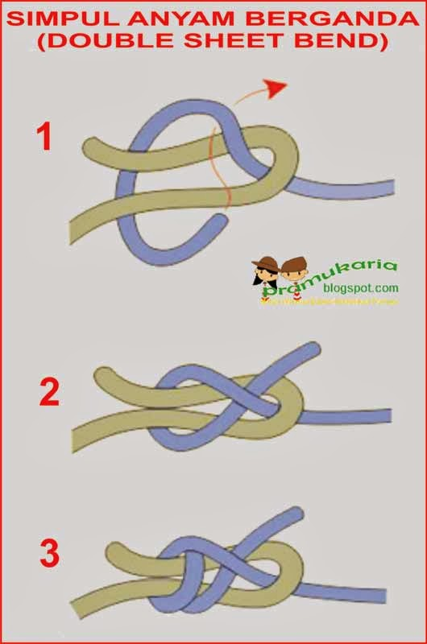

Simpul anyam berganda. Gunanya untuk menyambung 2 tali yang tidak sama besarnya dan dalam keadaan basah.

- Tekuk ujung tali yang besar
- Masukkan ujung tali kecil (dari atas ke bawah), kemudian lingkarkan di bawah kedua utas tali besar yang ditekuk tadi (gambar 1)
- Selipkan ujung tali kecil di sela-sela antara tali besar dan kecil (gambar 2)
- Lingkarkan ujung tali kecil pada kedua utas tali besar seperti langkah kedua.
- Selipkan ujung tali kecil di sela-sela antara tali besar dan kecil lagi seperti langkah ketiga (gambar 3).
- Tarik dan eratkan kedua utas tali hingga simpul menjadi erat.